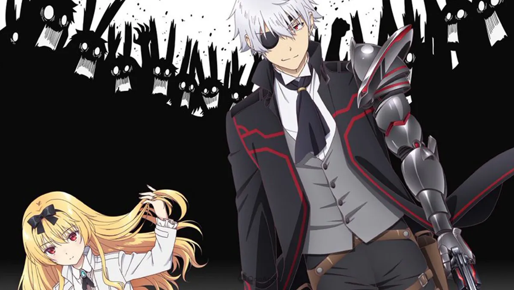
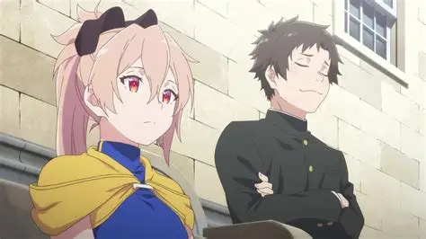
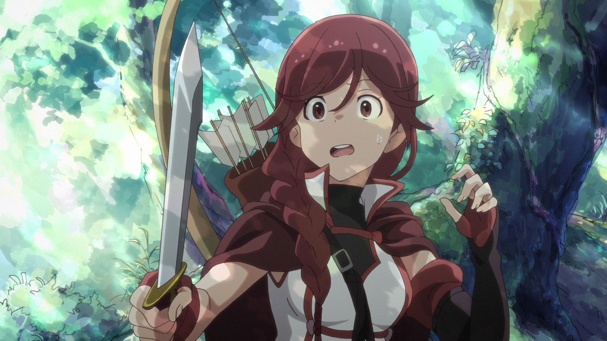
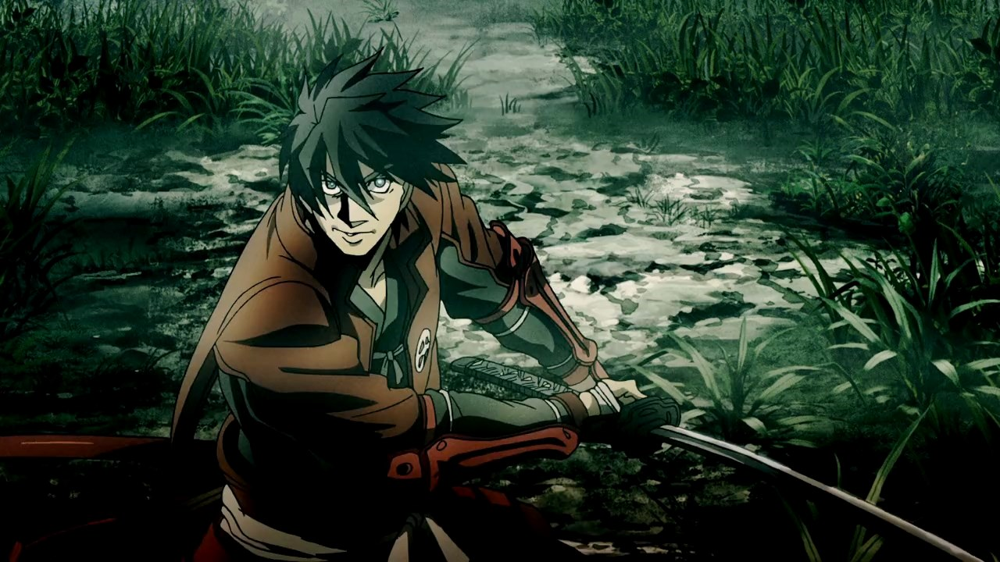
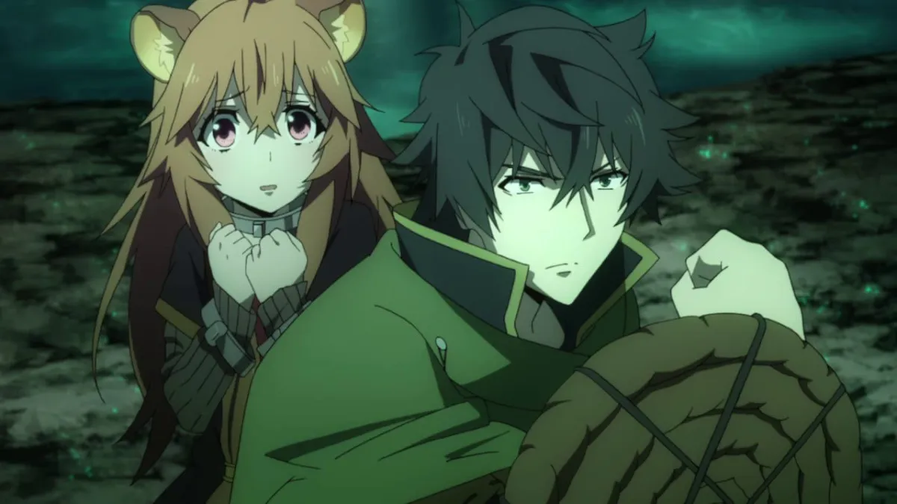
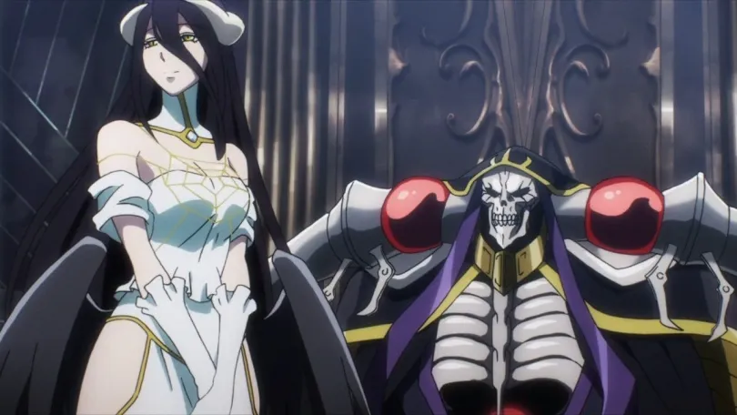
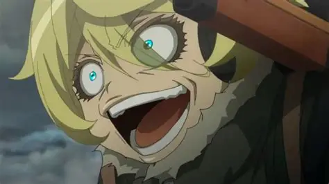
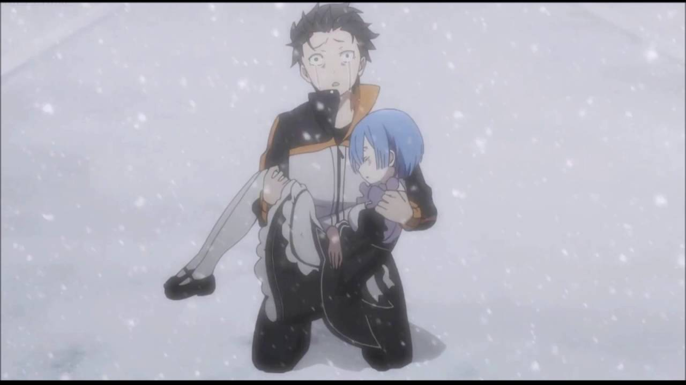
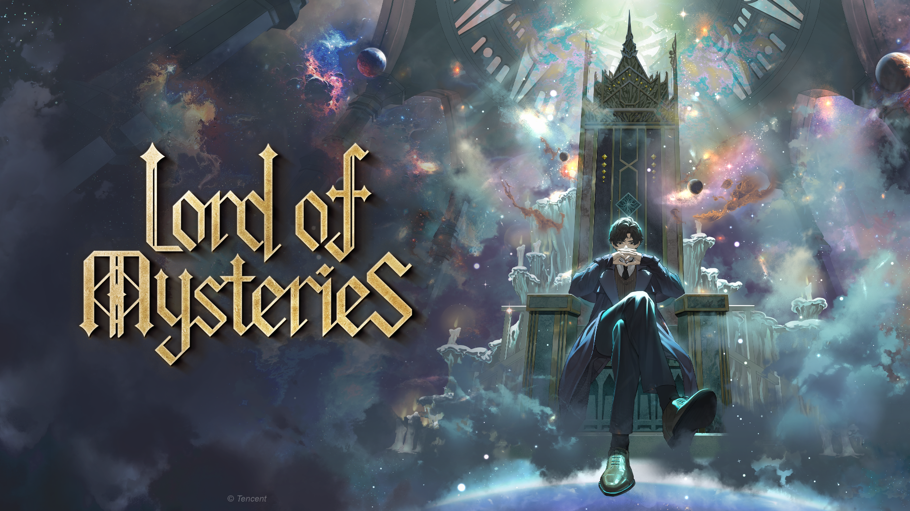

SMASH Senpai
Top 10 Darkest Isekai Anime Where Being Reincarnated Is a Living Nightmare
Isekai anime usually sell the fantasy of escaping reality — a second chance, overpowered abilities, and a world that bends to the protagonist’s will.
But these anime do the opposite. They turn reincarnation into punishment. A cruel reset button that throws characters into worlds filled with war, suffering, death, and psychological trauma.
In these stories, survival is never guaranteed. Power comes at a cost. Morality is blurred. And every victory leaves scars — mental or physical.
From endless time loops and child soldiers to gods that toy with human lives, these isekai worlds are hostile, unforgiving, and deeply unsettling.
These are the Top 10 Darkest Isekai Anime — where being reborn isn’t a blessing… it’s a living nightmare.
Sponsored
#10 Arifureta: From Commonplace to World's Strongest
Arifureta begins like a typical isekai — a classroom summoned to another world with heroic expectations. That illusion is shattered almost immediately. Hajime, the weakest student, is betrayed by one of his own and left to die in the depths of a monster-infested abyss.
What follows is not empowerment, but survival horror. Hajime is forced to endure starvation, dismemberment, psychological collapse, and complete isolation. His transformation into an overpowered figure comes at a brutal cost — his humanity. The series makes it clear: power in this world is bought with suffering.
Arifureta’s darkness lies not just in violence, but in betrayal. Being abandoned by allies leaves scars deeper than any monster attack. Hajime’s worldview becomes colder, more ruthless, shaped by the understanding that kindness gets you killed.
While later arcs lean into action fantasy, the early survival chapters are some of the bleakest in modern isekai. Reincarnation here is not a blessing — it’s a test that breaks you before it strengthens you.
- Episode count: 25+
- Genre: Dark Fantasy, Isekai, Action
- Known for: Betrayal arc, survival horror
- Core theme: Power gained through suffering

play anime smash or pass here (not sponsored)
SMASH SENPAI – Smash or Pass#9 The Executioner and Her Way of Life
The Executioner and Her Way of Life flips the isekai genre on its head. Instead of celebrating reincarnated protagonists, this world hunts them. People summoned from modern Japan are considered unstable threats — and are quietly executed before they can destroy the world.
The darkness of this series comes from its moral ambiguity. The main characters are not heroes, but assassins. Killing innocent people becomes a necessary evil to prevent mass catastrophe. The anime forces viewers to question whether survival justifies cruelty.
Death arrives suddenly here. Characters you expect to follow are erased without ceremony. Hope is deliberately weaponized — only to be crushed. This unpredictability creates constant unease, reminding viewers that no one is safe.
Unlike traditional dark isekai, this series isn’t about suffering through monsters, but suffering through ideology. Being reincarnated makes you a target, not a savior.
- Episode count: 12
- Genre: Dark Fantasy, Psychological, Isekai
- Known for: Subversion, sudden deaths
- Core theme: Morality versus survival
Sponsored
#8 Grimgar: Ashes and Illusions
Grimgar is dark not because of gore or villains, but because of realism. A group of strangers awaken in another world with no memories, no powers, and no safety net. Survival depends on teamwork — and mistakes are fatal.
Combat is slow, messy, and terrifying. Every enemy encounter feels like a life-or-death gamble. When characters die, the series doesn’t rush past it. Grief lingers. Trauma reshapes personalities. Loss is permanent.
Grimgar portrays the psychological toll of survival. Fear, guilt, and self-doubt dominate the narrative. There are no chosen ones — just fragile people trying not to fall apart.
This is isekai stripped of fantasy. No overpowered skills. No destiny. Just exhaustion and the slow realization that another world doesn’t care if you’re ready.
- Episode count: 12
- Genre: Drama, Fantasy, Isekai
- Known for: Realistic combat, emotional weight
- Core theme: Survival without power fantasy
#7 Drifters
Drifters throws history’s most violent figures into a brutal fantasy warzone. Samurai, war criminals, and tyrants are summoned not to save the world — but to conquer it.
The anime thrives on chaos. War crimes are common. Civilians suffer. Violence is not sanitized. Drifters portrays conflict as ugly, cruel, and driven by ambition. The characters aren’t heroes — they’re weapons.
What makes Drifters dark is its lack of moral comfort. Victory comes through manipulation, slaughter, and psychological warfare. There are no clean battles, only consequences.
Reincarnation here isn’t a second chance — it’s conscription into endless bloodshed. The world exists to be torn apart by those who already mastered killing.
- Episode count: 12 + OVAs
- Genre: Action, Dark Fantasy, Isekai
- Known for: Extreme violence, war themes
- Core theme: Power and brutality
Sponsored
#6 The Rising of the Shield Hero (Season 1)
The Rising of the Shield Hero starts with one of the most infamous betrayals in modern isekai. Naofumi is summoned as a hero, only to be falsely accused, publicly humiliated, and abandoned by the very kingdom he was meant to protect. In a single episode, the fantasy power trip collapses into social exile.
What makes this series dark is not constant violence, but systematic cruelty. Naofumi is stripped of trust, dignity, and support. Every interaction reinforces how deeply society has turned against him. Even when he saves lives, he is treated as disposable.
Season 1 focuses heavily on psychological survival. Naofumi’s anger, paranoia, and emotional numbness feel earned. His refusal to play the traditional hero is not rebellion — it is self-preservation.
The isekai world here is hostile by design. Power structures are corrupt. Justice is selective. Reincarnation doesn’t grant freedom — it traps Naofumi in a system rigged to break him.
Shield Hero proves that the darkest pain isn’t always monsters or war — sometimes it’s isolation and being hated for a crime you never committed.
- Episode count: 25 (Season 1)
- Genre: Dark Fantasy, Isekai, Drama
- Known for: Betrayal arc, social cruelty
- Core theme: Survival against systemic injustice
#5 Overlord
Overlord presents a terrifying idea: what if the protagonist was the villain — and the story never questioned it? Momonga, trapped in the body of an undead sorcerer, gradually sheds his humanity as he embraces absolute power.
The darkness of Overlord lies in its perspective. Mass murder, genocide, and manipulation are framed as strategic necessities. Entire nations are erased without remorse. The anime forces viewers to watch cruelty from the winning side.
Unlike redemption-based dark isekai, Overlord has no moral recovery. Ainz does not seek forgiveness. He builds an empire through fear, obedience, and annihilation. His subordinates reflect this mindset — loyalty without ethics.
The world itself feels fragile. Human lives are insignificant against Nazarick’s power. Hope exists only until Ainz notices you.
Overlord’s horror comes from inevitability. Resistance is meaningless. This is not a struggle to survive — it is a slow realization that evil has already won.
- Episode count: 50+
- Genre: Dark Fantasy, Isekai
- Known for: Villain protagonist, mass destruction
- Core theme: Absolute power without morality
Sponsored
#4 The Saga of Tanya the Evil
The Saga of Tanya the Evil is a war story disguised as isekai. A ruthless salaryman is reincarnated as a young girl in a world locked in endless conflict. There is no peace here — only strategy, sacrifice, and survival.
Tanya’s world is dark because it mirrors reality. Soldiers die meaninglessly. Nations justify atrocities through ideology. Faith is weaponized. God is not a savior — but an antagonist forcing Tanya into suffering.
The anime explores the dehumanization of war. Tanya becomes efficient, calculating, and terrifying. Children are sent to battle. Morality is replaced by results.
Unlike fantasy brutality, this darkness feels intellectual. Every choice has consequences. Victory costs lives — and defeat costs everything.
Reincarnation in this world is not escape. It is conscription into a machine that consumes souls without apology.
- Episode count: 12 + Movie
- Genre: Military, Dark Fantasy, Isekai
- Known for: Psychological warfare, realism
- Core theme: Survival within endless war
#3 Re:Zero − Starting Life in Another World
Re:Zero takes the fantasy of reincarnation and turns it into psychological torture. Subaru Natsuki is not overpowered, not special, and not prepared. His only ability — returning from death — is not a gift, but a curse that forces him to relive suffering endlessly.
Every death is painful. Every failure lingers. Subaru remembers everything — the fear, the helplessness, the screams. No one else does. This isolation slowly destroys him, breaking his sanity, his confidence, and his sense of self-worth.
What makes Re:Zero terrifying is its emotional realism. Subaru doesn’t become stronger through death — he becomes traumatized. Panic attacks, self-hatred, and emotional collapse are shown without mercy. The anime forces viewers to sit with his despair.
The world itself is cruel. Trust is fragile. Allies die brutally. Mistakes cost lives. Subaru must choose who deserves to be saved — knowing he cannot save everyone.
Re:Zero proves that repeating life does not make things easier. It only makes the pain heavier. This is isekai where hope exists — but must be earned through unbearable suffering.
- Episode count: 50+
- Genre: Dark Fantasy, Psychological, Isekai
- Known for: Death loops, emotional trauma
- Core theme: Survival through psychological collapse
#2 Now and Then, Here and There

Now and Then, Here and There is one of the most disturbing isekai ever created — not because of fantasy, but because of realism. A kind-hearted boy is pulled into a dying world ruled by warlords, child soldiers, and absolute despair.
There is no power fantasy here. No leveling up. No chosen-one destiny. Only starvation, torture, rape, and psychological abuse. Children are forced into war. Innocence is crushed systematically.
The anime does not sensationalize violence. It presents it coldly, matter-of-fact, making it even harder to watch. Hope exists, but it is fragile — constantly threatened by reality.
The world lacks resources, compassion, and mercy. Survival comes at the cost of humanity. Characters are broken, not redeemed. Trauma does not disappear.
Now and Then, Here and There feels less like fiction and more like a warning. It asks a brutal question: what if reincarnation didn’t give you meaning — only suffering you can never escape?
- Episode count: 13
- Genre: Dark Fantasy, War, Psychological
- Known for: Child soldiers, realism
- Core theme: Loss of innocence through war
#1 Lord of the Mysteries
Lord of the Mysteries represents the darkest evolution of the isekai genre. Reincarnation here is not adventure — it is exposure to cosmic horror, madness, and truths the human mind cannot endure.
The protagonist enters a world governed by ancient entities, forbidden knowledge, secret cults, and eldritch gods. Power exists, but every step toward it erodes sanity. Knowing too much is as dangerous as knowing too little.
Unlike other dark isekai, death is not the worst fate. Loss of identity, corruption of thought, and irreversible transformation are far more terrifying. Characters descend slowly — often without realizing they are already lost.
The atmosphere is suffocating. Paranoia is constant. Trust is dangerous. Reality itself feels unstable. Reincarnation doesn’t reset life — it traps you in a universe that does not care if you survive.
Lord of the Mysteries is not just dark — it is existentially horrifying. It proves that some worlds were never meant for humans to enter, let alone understand.
- Episodes: 13
- Genre: Cosmic Horror, Dark Fantasy, Isekai
- Known for: Lovecraftian horror, sanity decay
- Core theme: Knowledge as a curse
Play Smash or Pass on SMASH Senpai.
 PLAY SMASH OR PASS
PLAY SMASH OR PASS